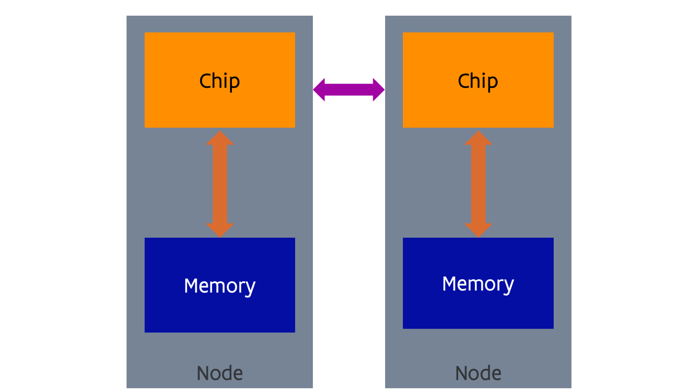

Distributed memory computing¶
NUMA shared memory machines also have their scaling limits . From a hardware point of view is is difficult to impossible to build a network that is fast enough to link together a large number of sockets in a way that memory access is fast enough, and there is another issue that we have not yet discussed that poses an even bigger limit (for those who know something about processor technology: ensuring that the caches of all sockets are coherent, so that every core reads the same value at the same memory address at any given time). There is also a scaling limit in software. Existing operating systems also do not scale well enough to large shared memory systems. It may need more than just changes to the OS scheduler (the part of the OS that decides at every moment which thread will run on which core) to cure the scalability issues. And lastly there is also an economical reason. Building large networks with low latency to offer transparent memory access is also very expensive.
The solution scientists and vendors came up with was to take a number what may look like a pretty standard computer (called the nodes of the supercomputer) and link them together with a fast network (called the interconnect). The concept is shown in the following figure:

The picture looks almost exactly as the one for NUMA shared memory, but there is one big difference: the nature of the network. The network cannot support direct memory access (and coherency of caches, something that we have not seen yet) as in the NUMA shared memory case, and has a higher latency and lower bandwidth, but can economically cover longer distances. The network is used for communication via sending and receiving software-initiated messages. There is no joint global address space (at least not in hardware, some companies have tried to emulate that in software). There is an evolution towards interconnects with some limited memory semantics that make it easier to create some kind of global address space, but not to the extent that it is as transparent to use as in the case of a NUMA shared memory machine.
Virtual shared memory solutions
Many research projects and startups have tried to emulate shared memory over distributed memory cluster interconnects. Some software presented a virtual machine to the OS, while other software solutions work more at the user level and just try to present a shared memory to an application.
ScaleMP was a now defunct company that made a virtual shared memory machine running over InfiniBand clusters. That software was also offered on the first Tier-1 system of the Vlaams Supercomputer Centrum for those users who needed more memory and a larger number of cores in shared memory than nodes at that time could offer.
These technologies are not very important anymore today as the scalability limits of shared memory, especially at the software level, can be reached already on a single node.
As there is no direct access to the memory of another node, it is also not possible to run a process across nodes. So an application will consist of multiple processes, at least one per node, that communicate with each other by sending messages over the network. Such supercomputers are even harder to program than shared memory computers, but are also far more scalable. The largest supercomputers in the world that only use regular processors as we discuss in this chapter (and no accelerators, something that we will discuss towards the end of the course) have more than 5 million cores.
Distributed memory computers found their origin in the '80s in research aiming at building cheaper supercomputers using more standard components, as it became quickly clear that CMOS semiconductor technology would soon become the technology of choice to build powerful microprocessors that could evolve much faster than the large purpose-built supercomputer processors (that also needed to shrink in size as the size became the limiting factor for the clock speed). The Cosmic Cube, built at Caltech in 1981 using standard Intel processors similar to the ones used in the first IBM personal computer, was probably the first example. Intel built and commercialised an evolved version of that design with their series of iPSC supercomputers. However, by the '90s, the more traditional supercomputer builders also adopted this design, with, e.g., the IBM SP/1 and SP/2 that used POWER processors that were also used in IBM workstations and UNIX servers, Convex Exemplar that used HP PA-RISC processors (which they also used in their workstations and UNIX servers) and the Cray T3D based on DEC Alpha processors (again a processor for workstations and UNIX servers).
Early distributed memory supercomputers in Belgium
The department of computer science of the KU Leuven has operated two smaller computers from the iPSC series, basically to be able to develop code to then run on bigger supercomputers of that type elsewhere.
In 1994, the central compute facilities of the KU Leuven acquired an IBM SP/2 system.
Another evolution got triggered in the early '90s. In 1994 Linux 1.0 was launched which worked well on standard PC hardware of those days. Researchers came up with the idea of combining very standard off-the-shelf PC's or small servers often running Linux with very standard off-the-shelf network technology (Ethernet, in 1994 this was still only 10 Mbits per second using the 10BASE-T standard, with 100 Mbit/s technology only being standardised in 1995). These clusters were called "Beowulf" clusters. The name refers to one of the first such clusters build in 1994 at NASA. However, a 100% Beowulf design had many shortcomings. The Ethernet technology of those days was way too slow to build a system that would be able to run a lot of software in a scalable way on a large cluster. Reliability was also a problem. PC's and workstations still crashed rather often. Now one crash every 50 days may not seem a real problem for a workstation or PC, but if you build a supercomputer with 1000 such computers you can expect 20 node crashes per day making it impossible to run an application at the full scale of the machine. To build a proper supercomputer you need very fast network technology, so supercomputer companies kept designing specific network architectures for that purpose, and reliable components.
This is shown nicely in the following anecdotes, taken from the IEEE sepctrum article "How to kill a supercomputer: Dirty power, cosmic rays, and bad solder" (you may need to be at an institution with library access to this journal to read the article).
-
ASCI Q was a supercomputer built in 2002 at Los Alamos National Laboratory. It consisted of 2048 4-socket nodes with the DEC Alpha EV-68 (21264C) processor, probably the fastest single chip processor at that time for scientific computing. However, the computer had a node crash on average every hour due to sensitivity to cosmic rays. With better shielding they managed to improve the reliability to one crash per 6 hours on average. This was due to a design flaw in the DEC Alpha CPU, where there was a data path that was not protected with error correction.
-
Big Mac was a real Beowulf design built in 2003 at Virginia Tech using 1,100 PowerMac G5 servers. That machine actually started crashing before it was completely booted. It too was too sensitive to cosmic rays as it did not use memory with error correction (so-called ECC memory which is nowadays used in almost all servers).
-
Jaguar, a Cray XT5 system installed at Oak Ridge National Laboratory in 2009, was a very nice real supercomputer design. It was the largest system in the world at that time, with 360 TB of memory and 18,774 nodes with 2 AMD quad core processors and custom network technology. Monitoring showed that there were 350 errors per minute in the memory that could be corrected by the ECC protection. However, on average there was still an uncorrectable 2-bit error every 24 hours...
Programming distributed memory¶
Automatic strategies through the compiler have never made it past the research phase.
A trivial way to exploit distributed memory computers is to run one or more independent programs on separate nodes. But that is of course not what such a machine is built for as usually you wouldn't need such an expensive network for that use.
Developing software for distributed memory computers is rather hard work for the programmer. There are some programming languages that help a little though, but as for share memory computing we will discuss that in a little more detain in the chapter on middleware.